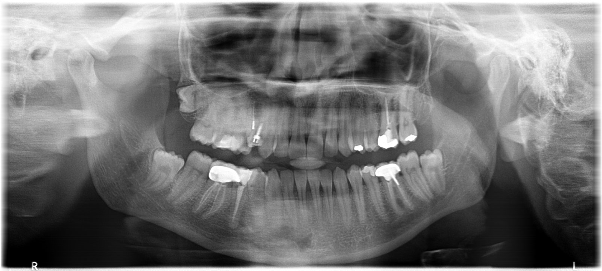

On-device AI for panoramic X-rays
A second pair
of eyes for
every OPG.
Flags caries, deep caries, periapical lesions and impacted teeth with tooth numbers, then helps you learn to read them yourself. It runs on your phone, so the X-ray never leaves it.

Second lookUpload an OPG. Get boxed findings with tooth numbers and a report in English and हिंदी.
→
LearnOPG of the Day. Tap what you spot, score against expert labels, keep your streak.
0
- Runs on device
- Works offline
- No upload
- अEN · हिंदी
Free and open source. Models trained on DENTEX (Hamamci et al., 2023, CC BY-NC-SA 4.0), non-commercial. Built by Dr. Swapnil Agrawal, BDS. GitHub
Second look
Your X-ray stays on this phone.
Downloading AI models0%
One-time download, about 38 MB. Cached for offline use after this.
Drop in an OPG to begin
Upload a panoramic X-ray or try one of 8 DENTEX sample cases. Analysis takes a few seconds and happens entirely on this device.
Something went wrong
Tap a box to highlight · double-tap or pinch to zoom
Findings to double-check
Patient report
Learn
Find every abnormal tooth, like an examiner would.
0day streak
0best score %
○
To dotoday's case
OPG of the DayTap the X-ray where you see a finding, then name it.